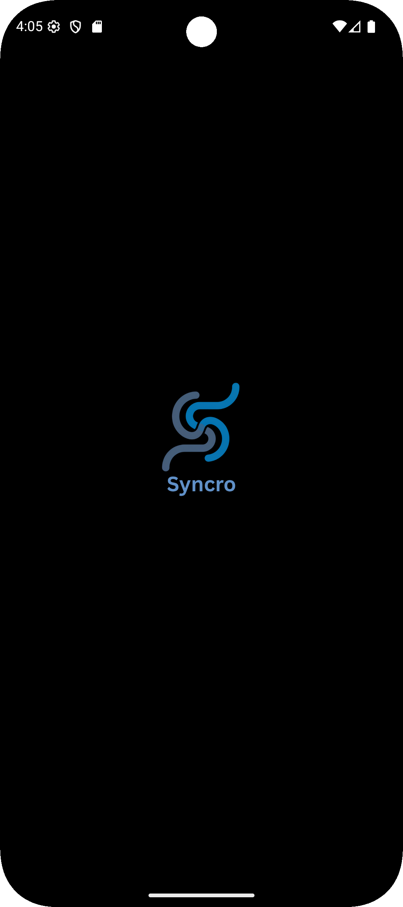
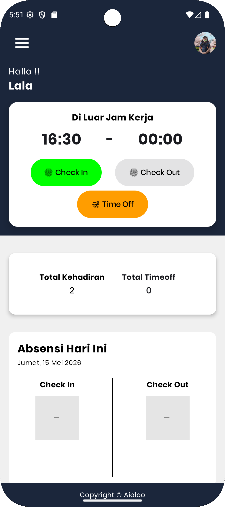
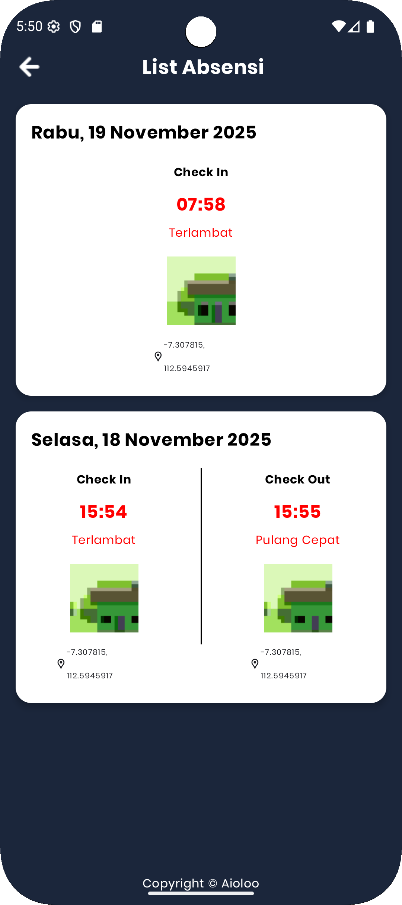

A brief description of this project. Demonstrating technical skills and problem-solving capabilities to create elegant and robust software solutions.



In developing Syncro, an employee attendance application that I worked on during my time at PT PAL, the main challenge was adapting to a new technology stack while building a system that could support real internal attendance needs. For portfolio purposes, the application name and several sensitive details have been anonymized, but the project itself was developed based on an actual work context. This project became my first experience using the Django framework, so I had to learn how to manage routing, models, views, templates, authentication, and database integration within Django. Another major challenge was deploying the application to a company server for the first time, which required me to understand server configuration, deployment flow, environment setup, and how to ensure the application could run properly outside the local development environment. To maintain confidentiality, the real application name, database structure, and sensitive company data were modified or replaced with dummy information in this portfolio version.
To solve these challenges, I built the application using Django with a fast learning process especially learning by doing. I implemented core attendance features such as employee data management, attendance records, and user access flow while keeping the interface simple and easy to use. For deployment, I learned and applied the basic process of preparing the application for a production environment, including adjusting configuration files, connecting the database safely, and ensuring the application could run on the company server. Sensitive information such as real employee data and database credentials was replaced with dummy or anonymized data to protect privacy and confidentiality.